kQSO — manual
A ham radio log for SOTA/POTA/WWFF/GMA/TOTA/BOTA activations, VHF contests, satellites and everyday operating, on the web, Android and iOS. The quick reference for entering QSOs is in the app under ? (How to log); this is the whole story, with pictures.
New to kQSO? Go through the First steps: a VHF contest and a SOTA activation, step by step.
1. Getting started
kQSO is a one-line log: you type the whole QSO as text (OK1ABC 59 JN79US) and the app recognizes each part by its shape. It needs no account and no network; everything stays on your device.
- Android: Google Play, or the APK from GitHub.
- iPhone and iPad: the iOS app is on its way to the App Store; until then use the web app added to the home screen.
- Web: kqso.ok1cdj.com in a browser on a computer, tablet or phone. After the first load it works offline too. On iPhone and iPad add it to the home screen (Share → Add to Home Screen), otherwise Safari may clear its data after a while.
The first screen is the log list. At the top: + New log, ? (how to log) and ⚙ (Settings). Each log has export, a VHF contest also EDI, and delete.
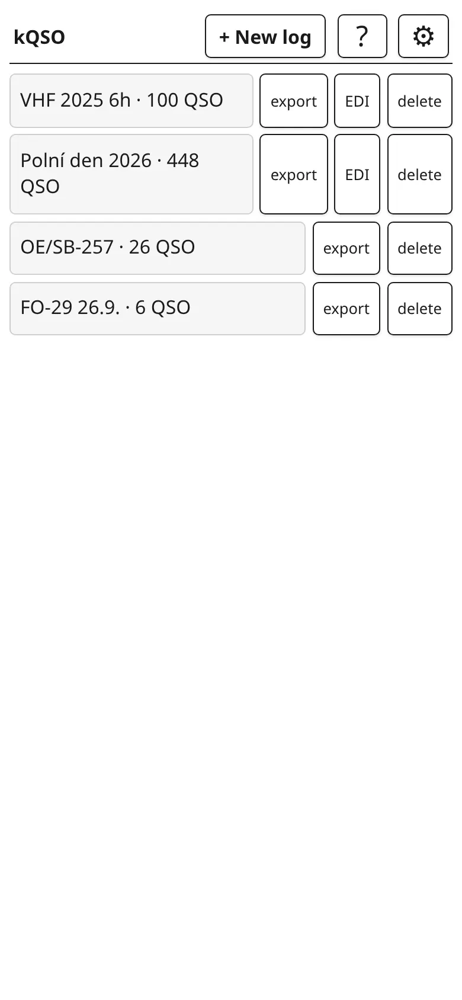
2. Logs and profiles
+ New log creates a log. Fill in the name, your callsign and locator (the crosshair button fills it from your position), the starting band and mode. The callsign and locator are remembered for the next log. The main choice is the profile, which decides what is exchanged and how the log is exported:
- Activation (SOTA, GMA, POTA, WWFF, TOTA, BOTA): reports and references. Type one or more references, separated by spaces, into My reference, e.g.
OK/ZC-001 CZ-0123; POTA parks and BOTA bunkers can be several. The locate button offers the nearest references within 25 km (only the programs chosen in Settings → Offline references); tap to add. - General: everyday operating, plus the other station's name.
- VHF contest: serial numbers, locators, points per km, EDI export. You choose the contest (IARU R1, VKV PA, FM pohár) and the entry (whole contest or 6 hours). The locator is required, 6 characters.
- Satellite: one log per pass. The satellite sets the uplink and downlink.
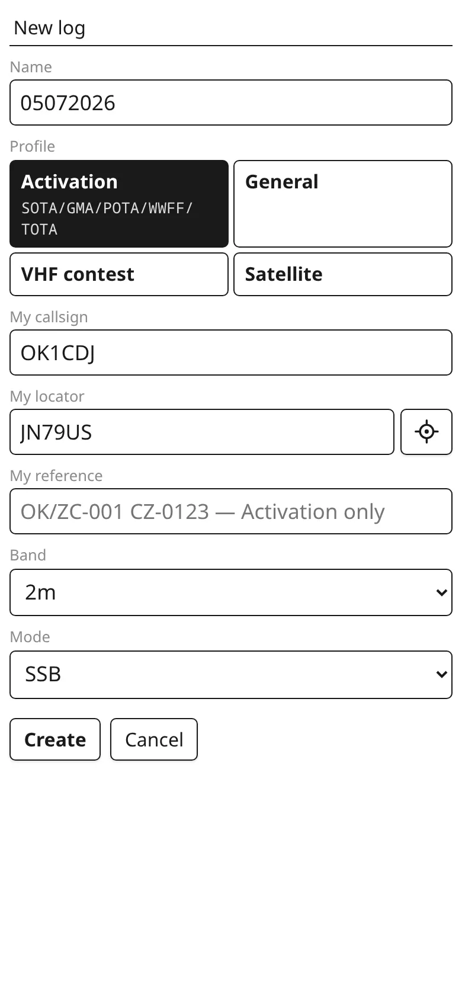
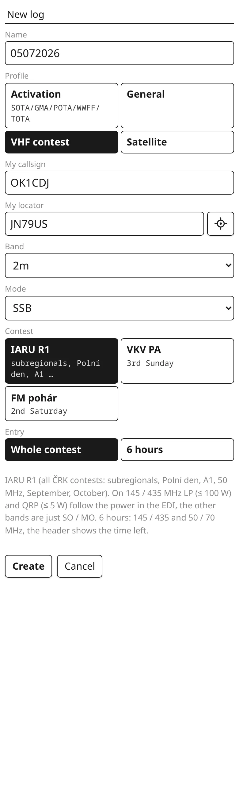
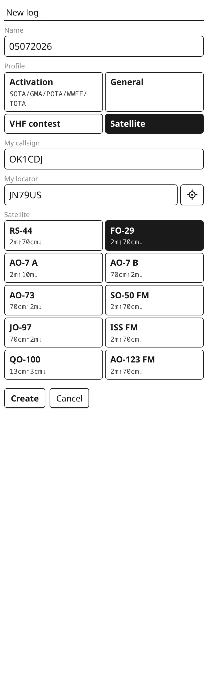
Tap a log in the list to get back to logging, even into an unfinished QSO: kQSO writes every QSO at once, so a crash or restart loses nothing.
3. Logging a QSO

From the top, the logging screen has:
- the header: back to the logs, band and mode (how to change them), in a VHF contest your next serial (boxed) and the azimuth to the other station, ? help and QSO n › the QSO list;
- the input line you type into;
- chips with what the app has recognized so far (CALL, RST, NR, LOC, QRB…), dashed for what is still missing;
- the strip with call and locator suggestions, or the last saved QSO;
- the kQSO keyboard: alphabetical 6×7, big keys that work with gloves.

The whole QSO on one line
Type what you hear and press Enter. Enter with text adds the parts to the QSO and clears the line; an empty Enter saves the QSO. Only the callsign is required (in a VHF contest also the received number and the locator). With a hardware keyboard Ctrl+Enter saves the QSO too, straight with whatever is on the line.
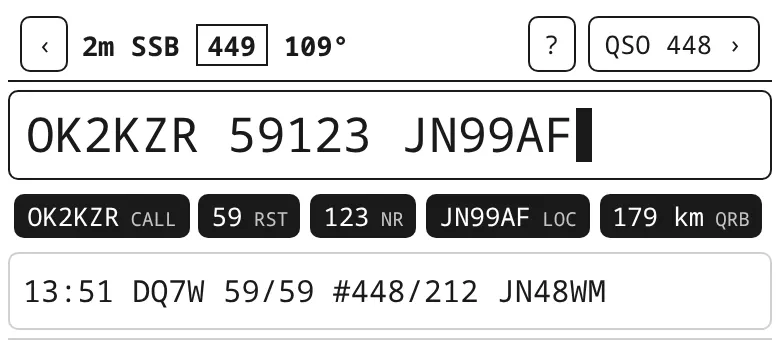
OK2KZR 59123 JN99AF: call, report 59 + serial 123, locator; the QRB of 179 km shows at once.You don't have to type the report. In a VHF contest a bare number after the call is the received serial, and the report stays the default 59 (599 in CW). So OK2KZR 123 is enough. Put another report in front of the number: 57123 or 57 123.
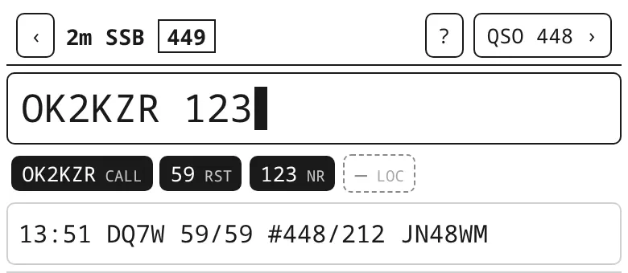
OK2KZR 123: RST 59 filled in, 123 is the received serial.Reports
Outside a VHF contest, a bare number after the call is the received report: OK1ABC 57. The sent report defaults to 59 (599 in CW) and you usually don't type it. When you give another one, type it with a T in front: OK1ABC 57 T55 = received 57, sent 55. If you don't type the received report at all, 59 / 599 is saved too. The chips show RST (received) and TX-RST (sent).
In a VHF contest a bare number after the call is the serial; a report goes in front of it (57123), see above.
Piece by piece, as you hear it
A QSO doesn't have to be on one line. Send each part with its own Enter, the way the other station gave it: the call, then the number, then the locator. The chips show what you have and what is missing. In a VHF contest an empty Enter saves the QSO only once it has the call, the number and the locator; until then it stays open.
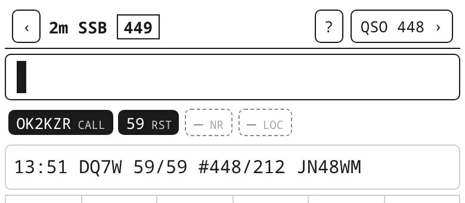
OK2KZR ⏎: the call is in, NR and LOC are missing.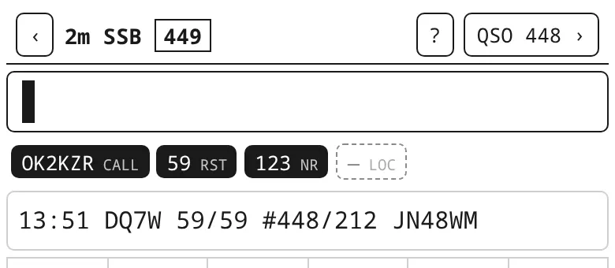
123 ⏎: the number is in.
JN99AF: locator, QRB and azimuth. Then ⏎ and an empty ⏎ saves.To fix a mistyped call, type the new one: a new call replaces the earlier one, the report and locator stay. In a VHF contest you can also start with the locator when you hear it first; the strip then offers the calls the database knows at that locator.
Suggestions, locator from the database, dupes
After two characters the strip offers calls from the database (the bundled list for the log type plus the stations you have worked). A tap fills the call in. When the database knows the station's locator, it offers it as + locator: a tap (or Alt+X) takes it.


In a VHF contest the QRV chip shows the other bands the station is usually on (from the database). Bands where you already have a QSO with it are struck out, so you see at once where to move it next.

A dupe turns the whole line black. A dupe is the same call on the same band and mode; in a VHF contest on the same band (any mode), in a satellite log on the same satellite. It can still be logged; in a VHF contest it scores 0 points.

Changing band and mode
The current band and mode are in the header (2m SSB). You pick the starting ones when you create the log; a reopened log carries on with the band and mode of its last QSO. There is no menu for it: band and mode are switched by typing, just like a QSO.
- Type a band or a mode on the line and press Enter:
70cm⏎,cw⏎, or both at once70cm cw⏎. The header changes right away. - Band and mode stick for all the following QSOs until you change them again. Saving a QSO or
Wdoesn't change them. - It also works on the same line as the QSO or in the middle of an unfinished one:
70cm OK1EM. The QSO gets the band and mode in force when it is saved (empty Enter); the dupe check and the QRV chip already use the new band. - Bands: 160m 80m 60m 40m 30m 20m 17m 15m 12m 10m 6m 4m 2m 70cm 23cm 13cm 9cm 6cm 3cm 1.25cm 6mm 4mm. The kQSO keyboard has no dot, so microwaves can also be typed in GHz:
1G= 23 cm,2G= 13 cm,3G= 9 cm,5G= 6 cm,10G= 3 cm,24G= 1.25 cm,47G= 6 mm,76G= 4 mm. - Modes:
cw,ssb,fm. Case doesn't matter. With a hardware keyboard, Alt+M also switches the mode (CW → SSB → FM), and Alt+N / Alt+P the band (next / previous). - A QSO saved on the wrong band or mode is fixed in the QSO list (tap the QSO), the last one with the
Ecommand.
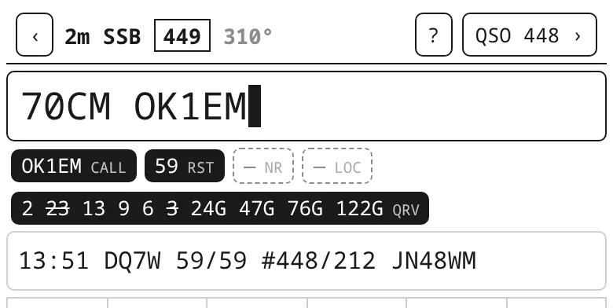
70cm OK1EM: the header still shows 2 m, but QRV already counts with 70 cm (it offers 2 m as another band).
70cm ⏎: header 70cm SSB, the serials go on.- VHF contest: the serials are shared by all bands, so they carry on after a switch. Dupes and points are per band; the recent QSOs and the contest panel show only the current band. For a station you already have from another band, kQSO offers the locator from the log.
- Satellite: the bands are set by the satellite chosen when the log was created; a typed band is ignored. On linear birds you can switch
ssb/cw. - With a radio (CI-V) band and mode come from the radio, so switching on the radio is enough. A typed band or mode tunes the radio instead, see Radio.
QSO time
The time is taken in UTC at your first keystroke. To set it by hand (e.g. from paper), type it as the first part of the line: 1832 OK1ABC.
Commands
A single letter alone on the line, then Enter. The preview under the line shows what will happen before you press Enter.
W | discard the unfinished QSO |
D | delete the last saved QSO (asks first) |
E | edit the last saved QSO |
H | help |
O | open the ON4KST chat (VHF contest log) |
G 144.290 | the band's sked QRG; G shows it, G - clears it |
@OK1ABC text | a chat message (no QSO is logged) |
Esc clears the line being typed (e.g. a call you only looked up).
QSO list and editing
QSO n › opens the QSO list, newest first. Tap a QSO to edit or delete it. In a VHF contest the list has a band switch, points per QSO and the band's score line; at the top are Map and Statistics.
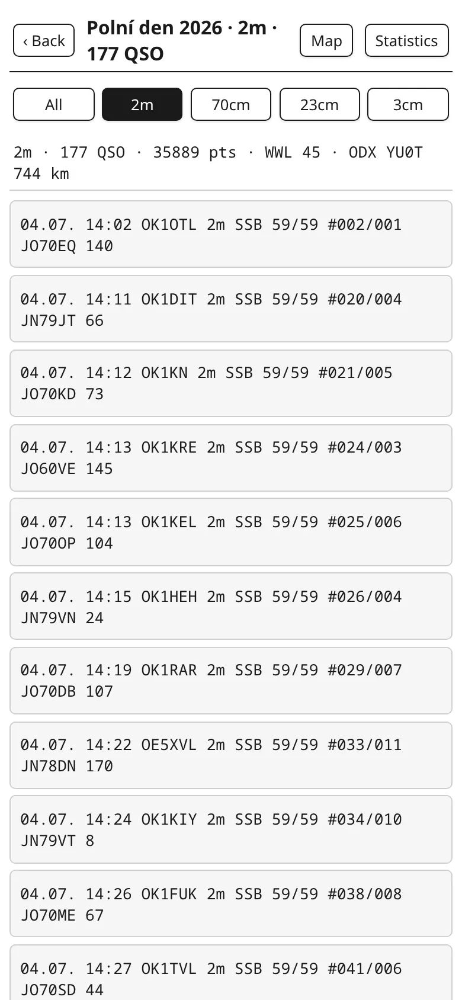
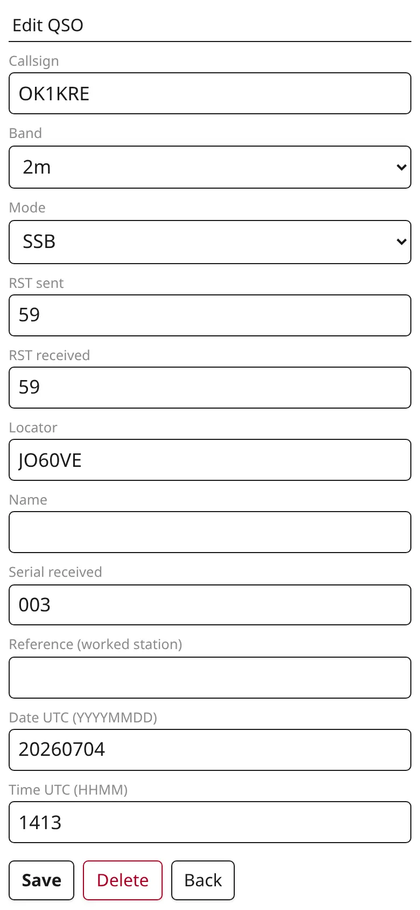
Keyboard: kQSO, system, none
In Settings → Keyboard for logging choose:
- kQSO: our own alphabetical keyboard (default);
- System: the phone's keyboard (tap the line to open it); the line is at the top with the recent QSOs below;
- None: a hardware keyboard only (computer, tablet with a keyboard); the space goes to the recent QSOs and, in a VHF contest in landscape, the contest panel.

4. VHF contest and ON4KST chat
A VHF contest log scores the QSOs (1 point per km between locator centres, IARU R1; VKV PA and FM pohár by large-square rings), checks dupes per band and numbers your QSOs. The next serial to give is boxed in the header; the numbering is shared by all bands.
In the 6 hours entry (on 2 m, 70 cm, 6 m and 4 m) kQSO keeps the six-hour window for each band separately:
- the window starts with the band's first QSO and the header shows the time left (6H 0:29);
- a gap of 2 hours or more between QSOs is the break: the time stops and shows in brackets (6H (2:15));
- the first QSO after the break starts part 2 with what is left of the six hours, and kQSO says so;
- when the six hours are up, kQSO says so and the header shows 6H 0:00. You can still log QSOs, but they don't count for the 6H entry (the log is sent whole).
The statistics show which QSOs fall into the window.

Contest panel
On a tablet or computer in landscape, with the system keyboard or none (Settings → Keyboard for logging → None), kQSO shows the contest panel on the right: the number to give in big digits, the UTC clock, the band's QSO count, the rate over the last 60 and 10 minutes, points, the average and the ODX.
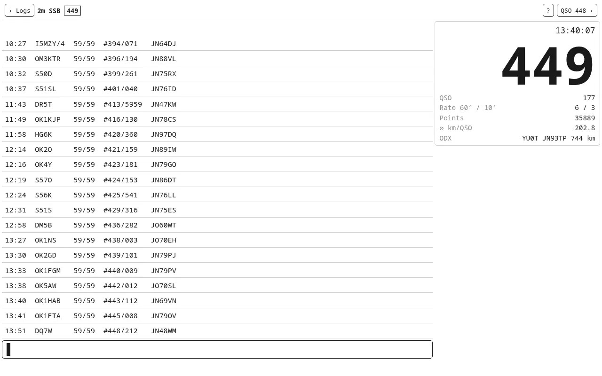
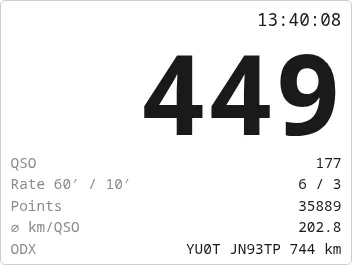
Statistics
QSO list → Statistics shows, for each band separately (bands are never mixed):
- a summary: QSOs, points and points per QSO, with several bands also the Total;
- Per hour (UTC): QSOs and points in each hour with running totals, so you see when it went well and when it stalled;
- Large squares: how many stations from each square, distance and bearing; tap a square for its stations;
- Top 10: the band's longest (most valuable) QSOs.
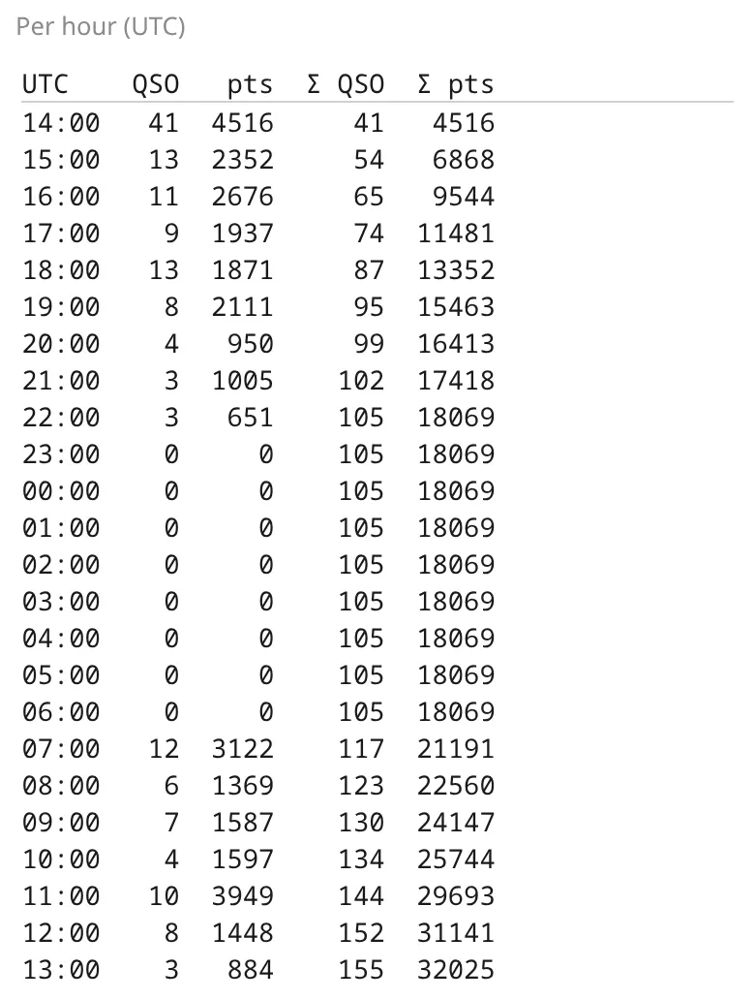
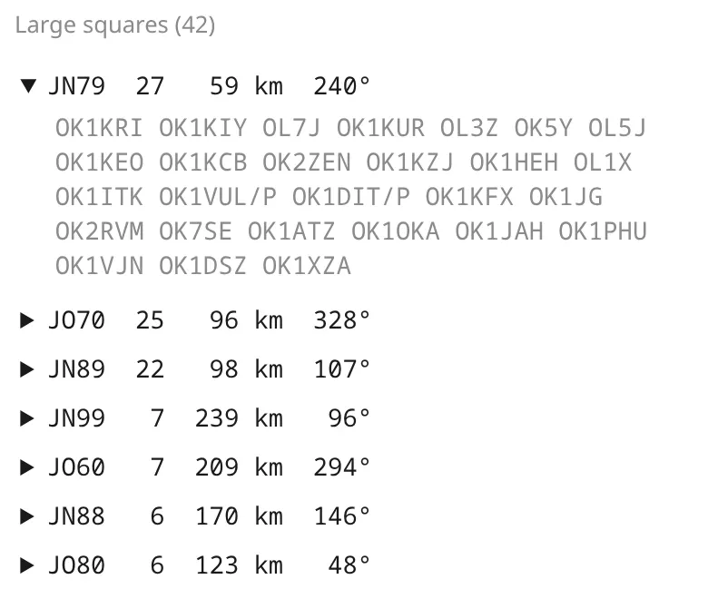
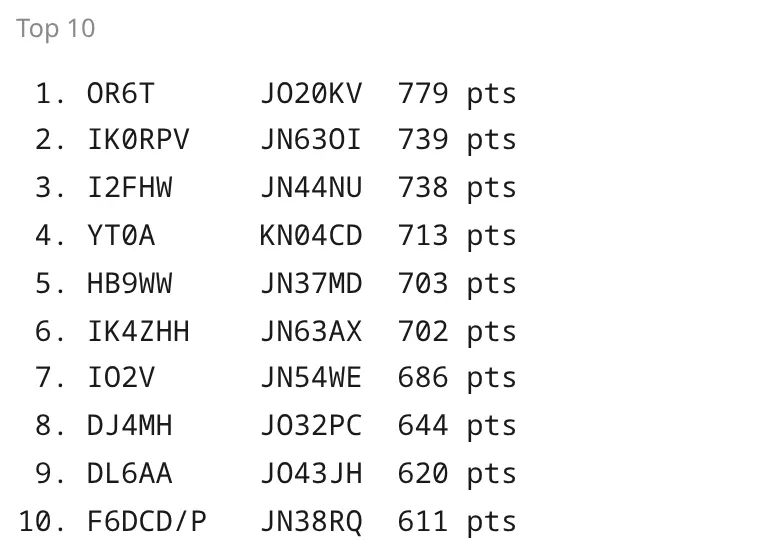
In a 6-hour entry the statistics show when the six-hour window ran, and the per-hour table has an out of 6 h column for the QSOs that don't count for the entry.
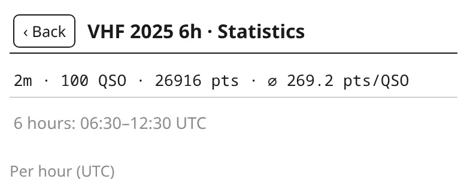
Map
QSO list → Map: a dot per worked locator, the locator grid and your QTH. Drag to move, − + to zoom, the corners button fits everything. In Settings you can hide the calls next to the dots.
Tap the map and the top left shows that spot's locator, distance (QRB) and azimuth from you, as in the log. Handy to see where to turn the antenna for a rain cell or a station you haven't worked yet. The × closes it.
Rain radar (Settings → Rain radar on the VHF contest map, off by default) adds the current RainViewer precipitation frame under the map. It is a tool for rain scatter on 3 cm: it shows where the rain cells are, and a tap into one gives the azimuth to turn the antenna to. The frame refreshes while the map is open; its UTC time is at the bottom left. The radar is for VHF contests only and is the only time the map uses the network (no log data is sent). In E-ink it is drawn in greys.
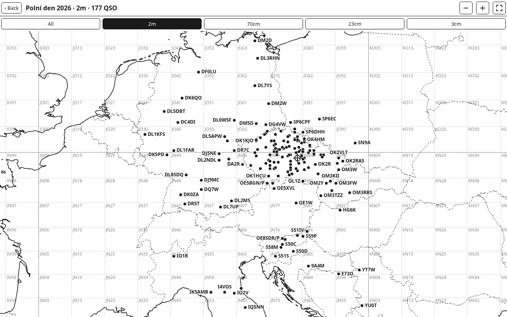
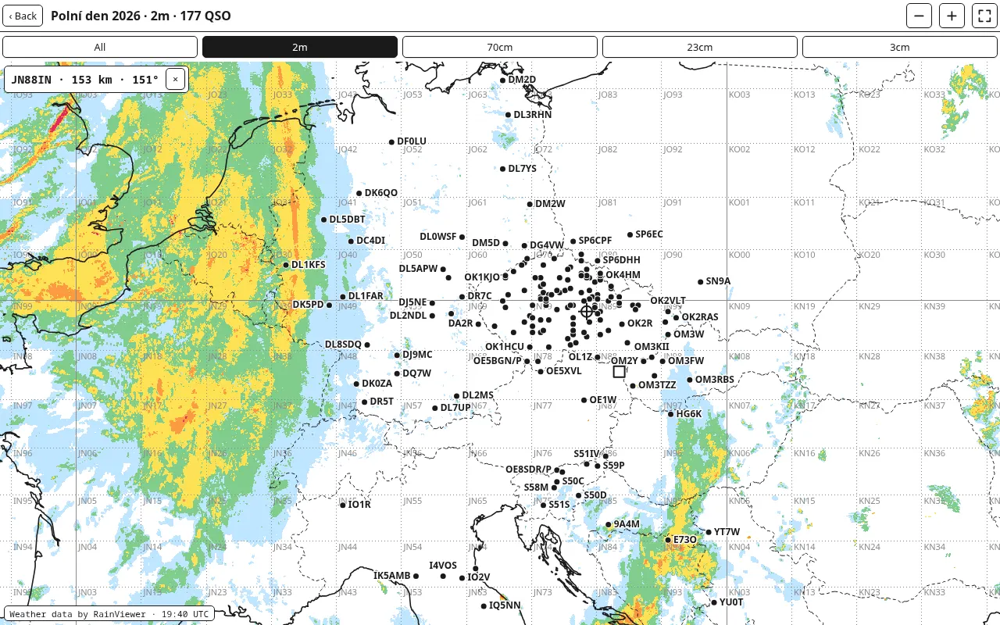
EDI export
The EDI button in the log list prepares the files for the contest manager: one file per band (e.g. 02OK1KPA.edi). At the top check the contest name, the contest, the entry and the category (SO, MO, CHECK); for MO add the other operators. The station (name, e-mail) is the same on every band.
Each band has its own power, antenna, antenna height and equipment; kQSO remembers them for the next contest. On 145 and 435 MHz the power decides the section: up to 100 W it is LP. VKV PA offers sending to the robot, FM pohár a summary for its web form.
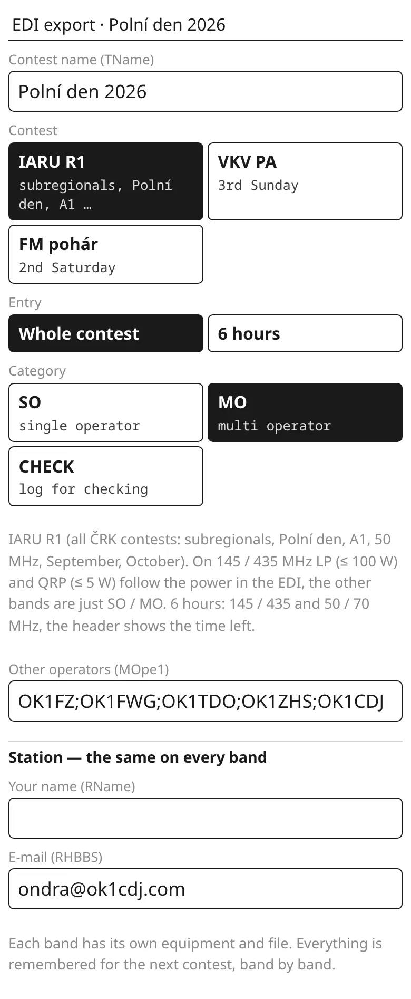
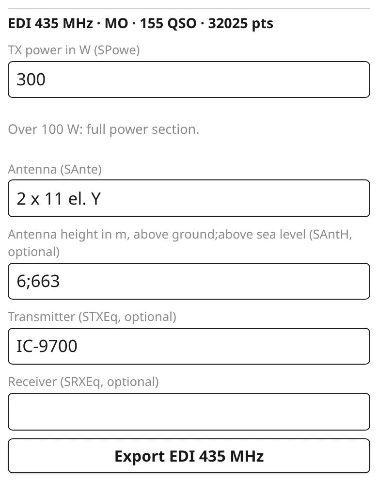
The ADIF from the export button has all bands in one file, e.g. for Wavelog.
ON4KST chat
The ON4KST chat is where skeds are arranged in VHF contests. kQSO has it right in a VHF contest log on 6 m and up; it picks the room (50/70 MHz, 144/432 MHz or Microwaves) from the log's band. You need your own ON4KST account (licensed radio amateurs only); without one, try the chat with the call DEMO (see below).
- Settings → ON4KST chat: the ON4KST call (empty = the log's call), the password and Save and connect.
- Before the first connection kQSO shows the chat rules: ON4KST runs the chat, abusive content isn't tolerated, a station can be muted and a message reported. I agree connects; it doesn't ask again.
- In a VHF contest log the chat opens from the bubble in the header,
O⏎ or Alt+O. Back in the list of logs the chat disconnects.
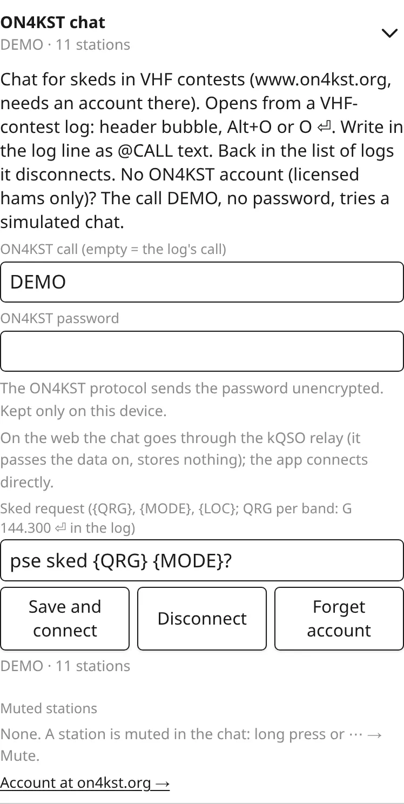
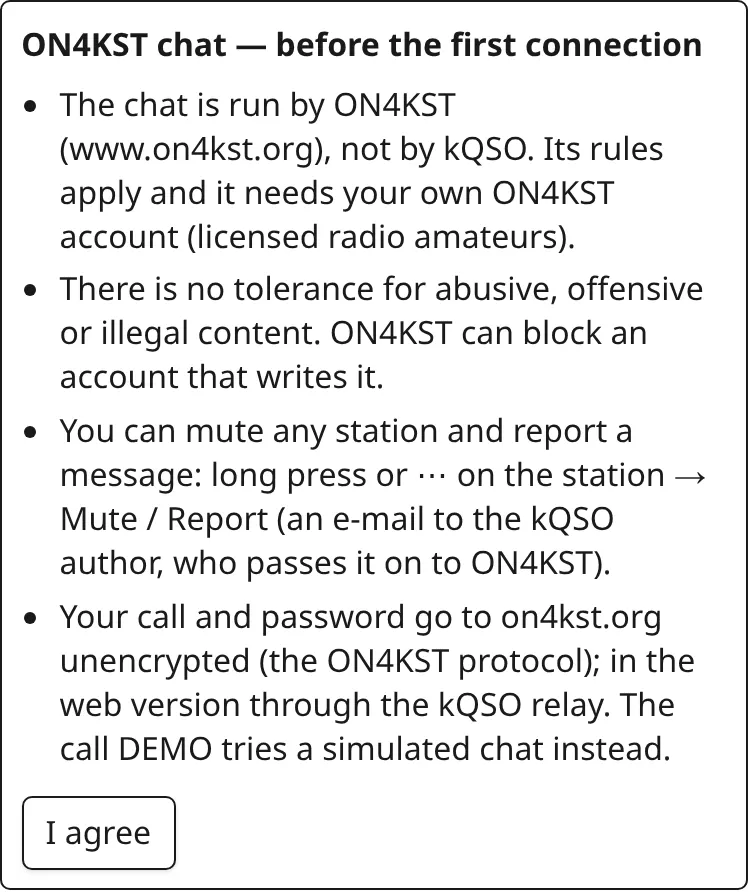
Messages: newest at the bottom; messages to you are bold with a bar on the left, and Only to me shows just those. Messages of stations you already have on the log's band are grey. A tap on a message puts the sender's @CALL into the line at the bottom: add the text and press Enter. @OK1ABC text goes to that station, text without @ to everyone in the room. The line also takes ON4KST commands as typed: /SETNAME Ondra 2/70/23 (the name, often with the bands), /SETLOC JN79US.
Stations: locator, distance and bearing from the log's locator. Sort by call, km or bearing; tapping the same sort again reverses it (▲ / ▼). Hide worked hides the stations you already have on the log's band, Hide away those who are away. A station that just joined is underlined. After the bearing come the bands the station is QRV on (except the log's band; struck out = already worked): kQSO reads them from the name (Bert 2/70/23, 6&2m), from the station's messages (qrv 1296.150, no 23) and from skeds sent to it, and adds those from the callsign database. The list under the contest panel and the QRV chip while logging show them too. Sked puts the sked request into the line, Log goes back to the log with the call and locator typed in. On a narrow screen the names are left out.
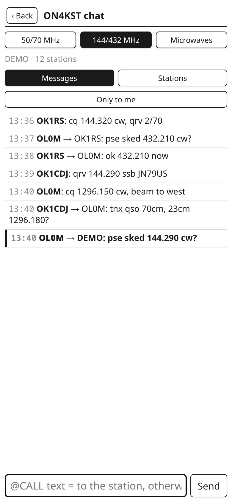
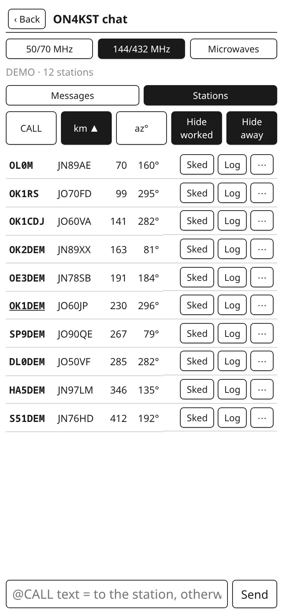
Station details: ⋯ on a station, or a long press on a station or a message. It shows the station, whether you have it on the band, its messages and your conversation, and Write, Sked and Log. At the bottom, away from the contest buttons:
- Mute: hides the station on this device (in the chat, under the contest panel and in the suggestions), and its messages to you are not counted. Muted stations, and unmuting, are in Settings → ON4KST chat.
- Report: opens an e-mail to the kQSO author with the station and its messages (the long-pressed message first); abuse is passed on to ON4KST.
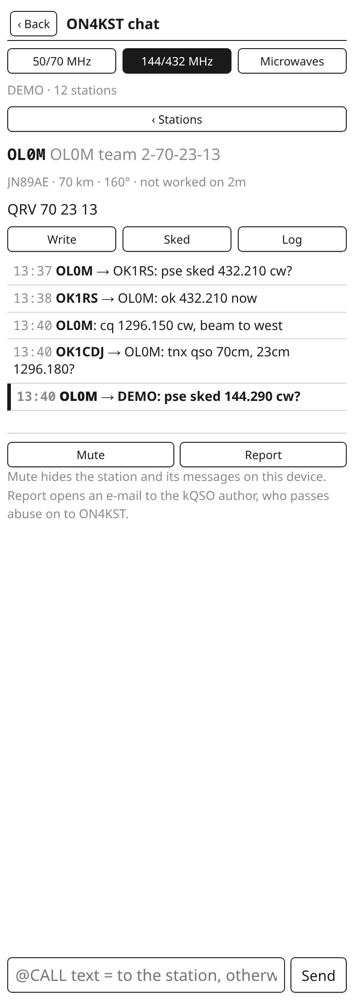
The sked request comes from the template in Settings (default pse sked {QRG} {MODE}?; {LOC} works too). {QRG} is the radio's frequency, or the sked QRG you set for the band: G 144.290 ⏎ in the log. It can be any text, e.g. G 432.210 cw; digits without a dot are kHz as with F, so on the kQSO keyboard G 144290 is enough. G ⏎ shows it, G - ⏎ clears it, and Alt+G puts G with the current QRG into the line to change it. kQSO keeps it per band.
The chat in the log: the last message to you is under the header; tap it to answer. You can write straight from the log's input line: @OL0M pse sked 144.290 ⏎. The preview shows where it goes (→ OL0M), and no QSO is logged. After @OK1 the strip offers the chat's stations.
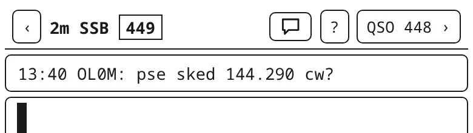
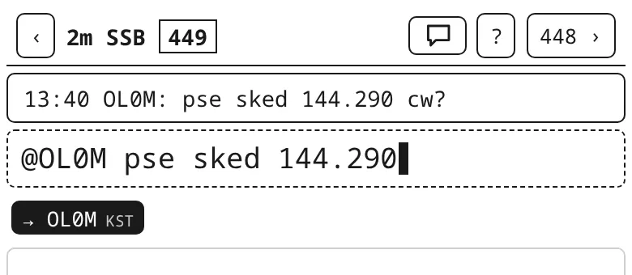
@OL0M … goes to the chat.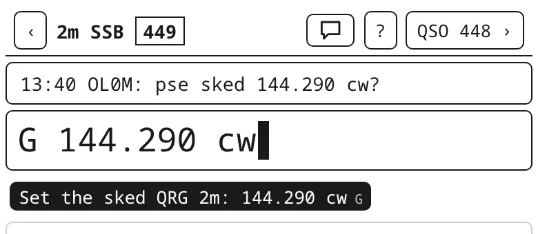
G 144.290 cw: the 2 m sked QRG.Active stations under the contest panel: on a tablet or computer in landscape, kQSO lists the stations that wrote in the chat in the last 30 minutes under the contest panel, sorted and filtered as the chat's station list. A tap writes @CALL, S the sked request.
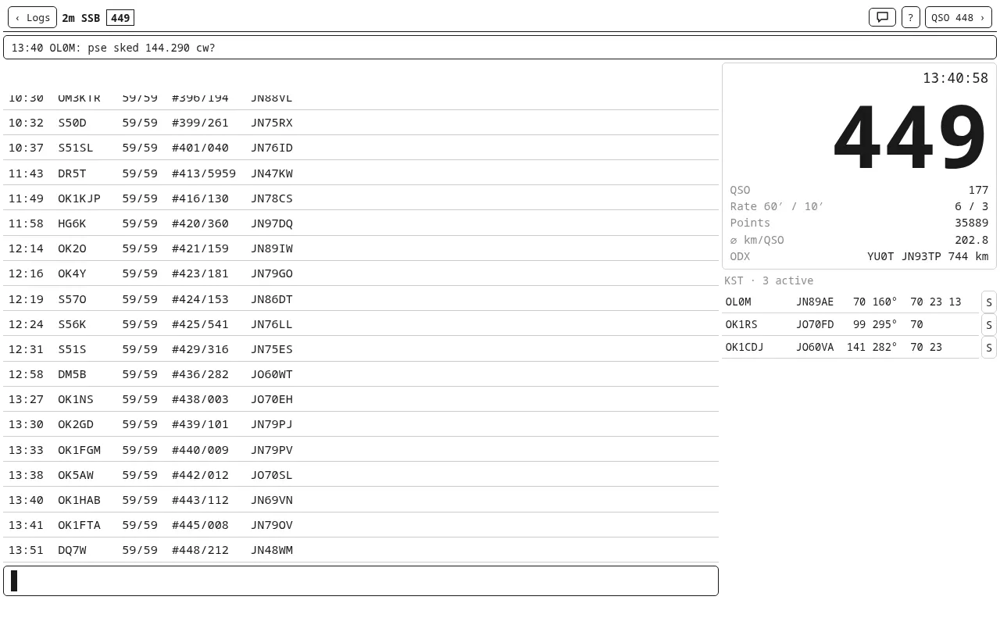
Locator: the QRB and bearing the others see come from your ON4KST account's locator. When it differs from the log's (portable), the chat and the list under the panel offer Set JN89AB, which sends /SETLOC. Nothing is sent by itself.
Apps and web: the Android and iOS apps connect to ON4KST directly. A browser can't, so the web version goes through the kQSO relay, which only passes the data on and stores nothing. The ON4KST protocol sends the password unencrypted; it is stored only on your device.
DEMO: with the call DEMO and no password kQSO doesn't connect to on4kst.org but runs a simulated chat with stations, messages, answers to @CALL and /SETLOC. The pictures in this part come from it. Afterwards choose Forget account in Settings and enter your own.
5. Activations and satellites
Activations
An activation exchanges reports: DD2TC 55 is a received 55, the sent report stays 59. Give another sent report with T: DD2TC 55 T57 (see Reports).
Summit-to-summit (S2S), park-to-park (P2P) and QSOs with another reference: type the other station's reference on the line after its call, after the report too if that's when you hear it: OK1ABC/P 55 OK/ZC/001. The keyboard has no dash, so it is typed with a slash and the last slash becomes a dash (the REF chip shows OK/ZC-001). kQSO tells the kind of reference by its shape:
| SOTA | OK/ZC/001, OE/SB/257 |
| GMA | OL/LI/001, DA/BW/001 |
| POTA | CZ/0123, US/10000 |
| WWFF | OKFF/0001 |
| TOTA (lookout towers) | OKR/1001 |
| BOTA (bunkers) | B/OK/0123 |
A QSO has one reference of the other station; typing another replaces it. In the ADIF, SOTA goes to SOTA_REF, POTA to POTA_REF, WWFF, GMA and TOTA to SIG / SIG_INFO, BOTA with SIG WWBOTA (as wwbota.net asks, also MY_SIG for your bunkers, several comma-separated), so an S2S is counted after the upload to sotadata.org.uk.

OK1ABC/P 55 T57 OK/ZC/001: received 55, sent 57, the other station on summit OK/ZC-001.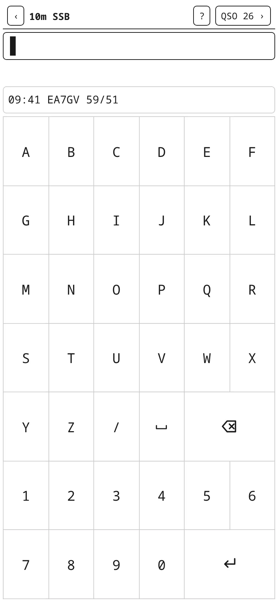
When an activation has several own references (a summit + a park), export offers the whole ADIF plus one file per reference, as each program wants its own upload.
General log, e.g. portable
The General profile is for portable operation without an award programme, an outing, or a Field Day outside a VHF contest. You exchange a report and, when the other station gives them, a locator and a name: OK1ABC 57 JN79US PETR. The locator is taken after the call (4 or 6 characters); a word that is neither a call nor anything else is the name. Your own call can have a slash (OK1CDJ/P), and so can the other station's (OK1ABC/P, HB0/OK1MCS/P). A General log can be pushed to Wavelog.

Satellites
A satellite log is one pass. You pick the satellite when creating the log; it sets the uplink and downlink bands and SAT_NAME. The exchange is a report and a locator: 9A2U 59 JN75RO. On linear birds you can switch ssb and cw.
QSO list → Map shows the locators of the stations from the pass, like the VHF contest map (without the rain radar). The QSOs carry the uplink and downlink frequencies (ADIF FREQ / FREQ_RX), so Wavelog knows them after the push.
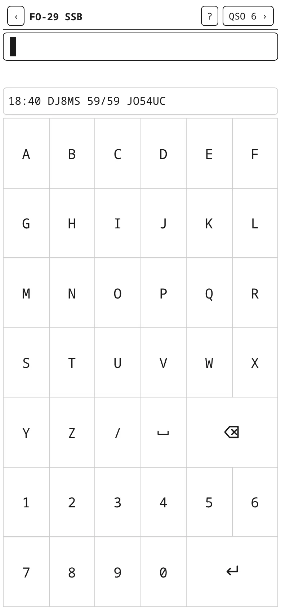
6. Export and Wavelog
kQSO has no log import and syncs nothing: a log is sent or exported, and that's it.
- export in the log list saves an ADIF (in the apps through share or to files, on the web as a download).
- EDI for a VHF contest, see VHF contest.
- Wavelog: in Settings enter your Wavelog's URL (https only) and an API v2 token with the scopes
qso:writeandstation:read(Wavelog 3.1 and newer), tap Connect and pick the station profile. General, Satellite and VHF contest logs then get a Wavelog button; after a tap it shows how many QSOs were new and how many dupes. Activations are not pushed to Wavelog (they go to SOTA, POTA… through their own uploads).
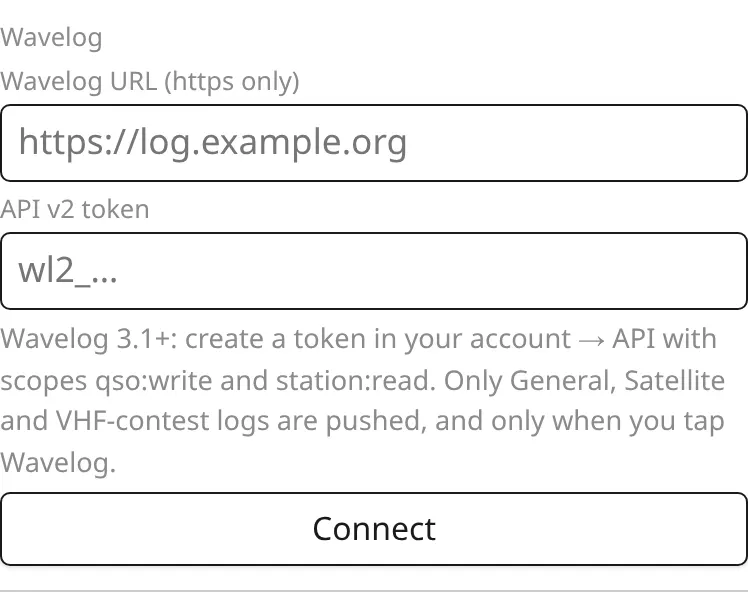
7. Callsign database and offline references
The callsign database gives suggestions and locators. It is made of the bundled set for the log type and your own worked stations, which grow with every QSO. In Settings you can switch it off, export it, import (merges) and delete your own part.
| VHF contest | about 3,000 calls from the public EDI logs of the last two years, with the locator and the bands the station works (the QRV chip). A locator counts once enough logs have it (144 MHz 5, 432 MHz 3, higher 2) or from the station's own log, which drops the typos. Refreshed about twice a year with a new app version. |
| Activation | about 1,000 calls of stations that often call activations (chasers). |
| Satellite | about 5,300 calls of satellite (LEO) operators with locators. |
| General | no bundled set, only your own stations. |
Your own QSOs go into the database from every log; working a station on a new VHF band adds that band to its QRV.
Offline references: the SOTA, POTA, WWFF, GMA, TOTA and BOTA lists (bunkers from WWBOTA) for the nearby references offer. Choose there which programs are offered nearby; a reference of any program can always be typed. The area around you downloads by itself when online; before a trip download an area (field JN or locator JN69).
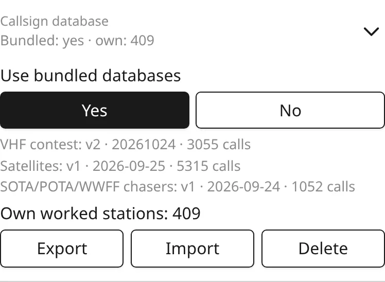
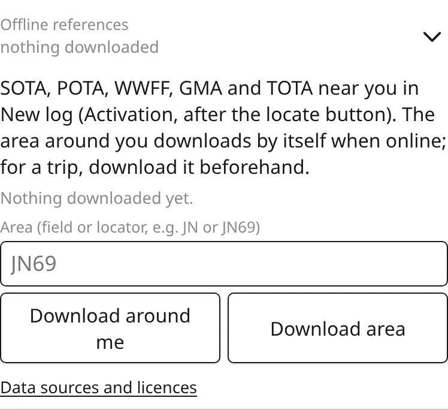
8. Radio (CI-V) and the CW keyer
Both are beta. Please report bugs on GitHub Issues.
Radio – CI-V
kQSO reads and tunes Icom radios. Known models: IC-705, IC-706 / MkII / MkIIG, IC-910 (optional 23 cm unit), IC-9700, IC-7300, IC-7610, IC-7100; another radio with an unknown address is driven as a generic CI-V radio (band, mode, frequency).
- IC-705 over its Bluetooth (Android and iOS apps): Settings → Radio → IC-705 Bluetooth → Connect. The first time open MENU → SET → Bluetooth Set → Pairing Reception on the radio.
- Any Icom through the M5-ESP32-keyer on the radio's CI-V jack (firmware 2.1.0 and newer; apps and Chrome / Edge): Settings → Radio → Via the keyer. Switch CI-V Transceive on in the radio.
Band, mode and the exact frequency then come from the radio. A typed band or mode tunes the radio, F28300 tunes it to 28.300 MHz. A band the radio can't do switches only the log. The radio model goes by its CI-V address; choose it by hand if the address was changed.
CW and voice through the radio: the IC-705, 9700, 7300 and 7610 send the CW macros with their own keyer over CI-V (the IC-7100 too), so no M5 keyer is needed; in SSB and FM the strip offers the radio's voice memories T1–T4 (record e.g. a CQ in the radio; F5–F8 on a keyboard, Esc stops). Older radios (IC-706, 910) are keyed by the M5 keyer's wire.
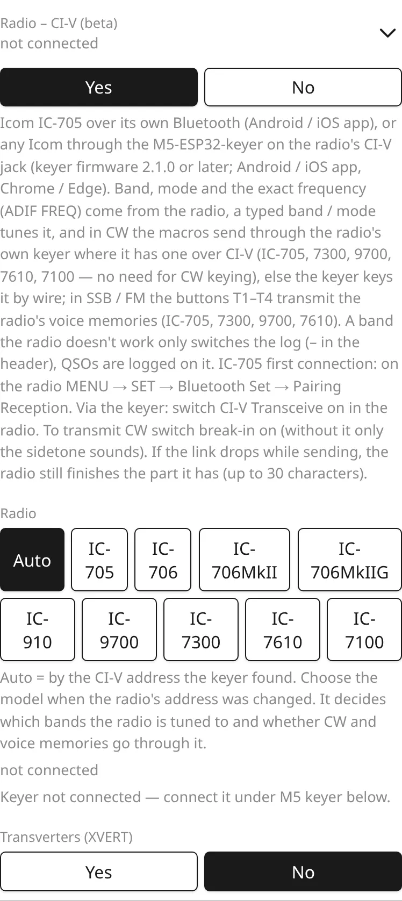
Transverters (XVERT): per band the RF frequency and the IF on the radio. Tap a band to switch its transverter on. A typed band then tunes the radio to the IF and the log gets the RF frequency (XV in the header).
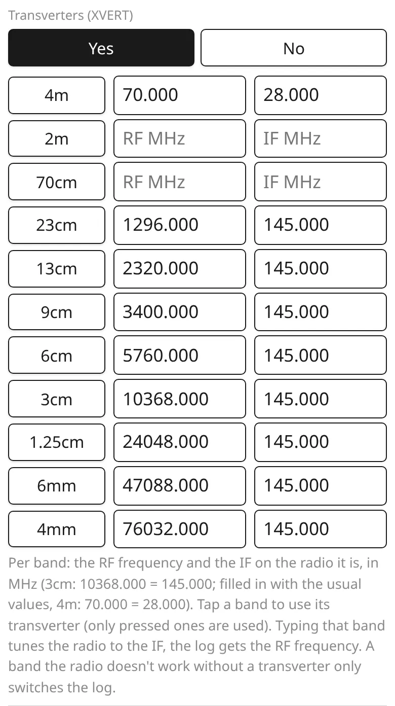
M5 CW keyer
The M5-ESP32-keyer is a home-built keyer; parts, schematics and the firmware flasher are at keyer.ok1cdj.com. It connects over Bluetooth (Android and iOS apps, Chrome / Edge): Settings → M5 keyer → CW keying Yes → Connect. In CW the strip then offers the macros CQ, EX, TU, MY, LOC/REF and ?, and the header shows RUN or S&P and the speed. With a radio that keys CW over CI-V you don't need the M5 keyer (see Radio).
- Each profile has its own macros for RUN (I call CQ) and S&P (I answer). Variables:
{CALL}{MYCALL}{MYLOC}{MYREF}{RST}{NR}{LOC}{REF}{HI}(GM / GA / GE by local time). - ESM (as in N1MM): Enter sends the macros by the state of the QSO. Switch it on in Settings or with the
ESMcommand. - On the line:
R/SRUN / S&P mode,S20speed 20 WPM,Creconnect,K PSE QRSsends the text,Kalone starts the CW keyboard (what you type goes on the air). Esc or STOP stops sending.
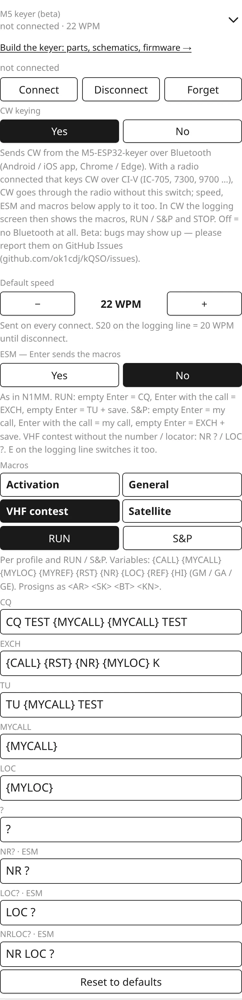
9. Hardware keyboard
With a keyboard (computer, tablet) these shortcuts work. A shortcut with nothing to do right now leaves the key alone.
| Enter | add what is typed; an empty Enter saves the QSO |
| Ctrl+Enter | save the QSO now (when it has all it needs) |
| Esc | clear the line being typed; while sending, STOP |
| Alt+W Alt+D Alt+H Alt+E | discard the QSO / delete the last / help / edit the last |
| Alt+X | take the locator the database offers |
| Alt+M | mode CW → SSB → FM |
| Alt+L / Alt+Q | QSO list / back to the logs |
| Alt+N / Alt+P | next / previous band |
| F5 F6 F7 F8 F11 F12 | macros CQ EX TU ? MY INFO; in SSB / FM F5–F8 the voice memories T1–T4 |
| PgUp / PgDn | CW speed ±2 WPM |
| Alt+R Alt+S Alt+C Alt+K | RUN / S&P / connect the keyer / CW keyboard |
| Ctrl+M | ESM on / off |
| Alt+O / Alt+G | ON4KST chat / sked QRG |
10. Settings
⚙ in the log list. The parts in order:
- Display
- Standard or E-ink (black and white only, no shadows or animations, for e-ink screens such as the Mudita Kompakt). In Standard the theme System, Light or Dark.
- Keyboard for logging
- kQSO, System, None; see Logging a QSO.
- Station calls on the map, Rain radar
- Labels next to the map dots; the RainViewer radar on the VHF contest map (off by default, the only time it uses the network).
- Wavelog
- URL, token, station profile; see Export and Wavelog.
- Callsign database, Offline references
- See Callsign database.
- Radio – CI-V, M5 keyer
- See Radio and keyer.
- ON4KST chat
- Account, sked request, muted stations; see ON4KST chat.
- Storage
- Where the data is and whether it is persistent. In the web app, adding it to the home screen and the first QSO make the storage persistent.
- Check for updates / Anonymous usage statistics
- Android from GitHub: once a day asks for a new version. Web: anonymous counts of screens and features (never log content); both can be switched off.
- About
- Version, licence, links, How to log, Manual and What's new.
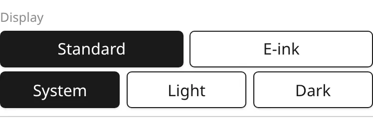
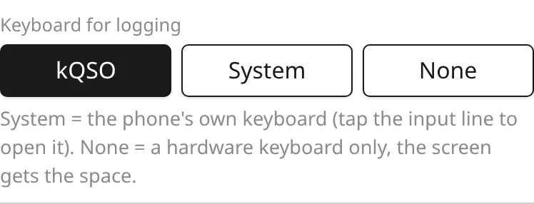
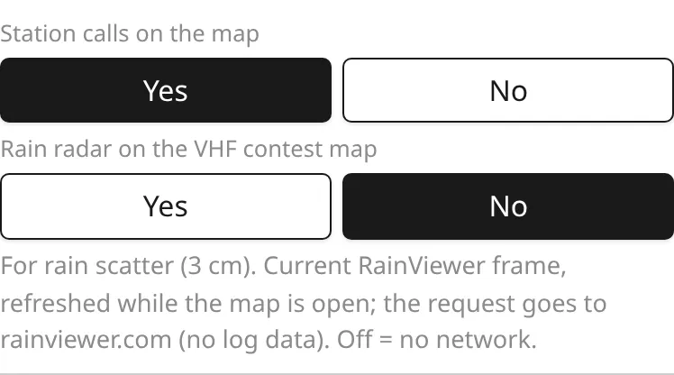
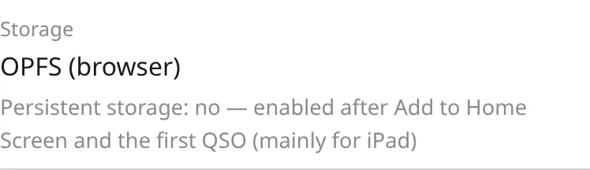
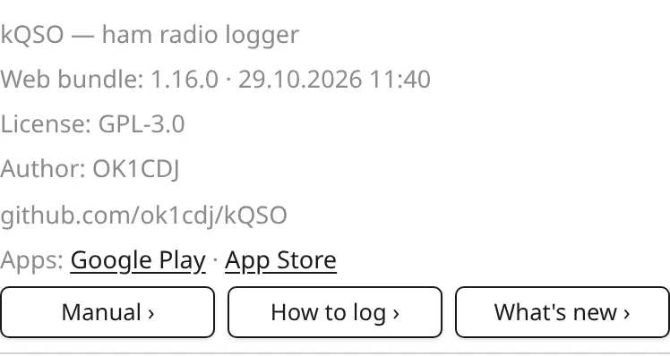
11. Questions and problems
- Where is my data?
- Only on your device: on Android in the app's storage, on iOS in its Documents folder (visible in the Files app), on the web in the browser's private storage. No server sees it. See the privacy policy.
- My logs disappeared in the web app.
- A browser may clear a site's data without persistent storage. Add kQSO to the home screen and check Settings → Storage. Export important logs.
- The keyer or the IC-705 won't connect.
- On Android allow Bluetooth for the app (on Android 11 also location, which the system requires for a device scan). On the web only Chrome or Edge. When the link drops, tap ✕ in the header or type
C. - I got my locator or call wrong when creating the log.
- The log header (call, locator, references) can't be changed after the log is created. If the log is still empty, delete it and create it again. Otherwise create a new log with the right data and log the next QSOs there; in a VHF contest check it right after the first QSO, as the points are counted from your locator.
- I'm copying QSOs from paper from another day.
- A time typed at the start of the line (
1832 OK1ABC) is for today's UTC date. Log a QSO from another day and fix its date in the QSO list (tap the QSO, the Date UTC field). - How do I move my logs to another phone or computer?
- kQSO has no import and no sync: logs are exported (ADIF, EDI) or pushed to Wavelog, and that's it. A new device starts with an empty list. The callsign database moves with Settings → Callsign database → export / import.
- How do I switch the language?
- kQSO is in Czech or English by the system language (the browser's on the web). There is no separate switch in the app.
- The app didn't take a call or a locator.
- Look at the chips under the line: they show what kQSO recognized. A locator counts only after the call (in a VHF contest a full locator any time). If something looks wrong, please write to GitHub Issues.
- I have no ON4KST account.
- ON4KST accounts are for licensed radio amateurs only (sign up at on4kst.org). Without one, try the chat with the call
DEMO, see ON4KST chat. - The chat doesn't connect, or I don't see it in the log.
- The chat is only in a VHF contest log on 6 m and up. Why it doesn't connect (wrong password, no account) shows in the chat's status and in Settings → ON4KST chat. When the link drops, kQSO connects again by itself.